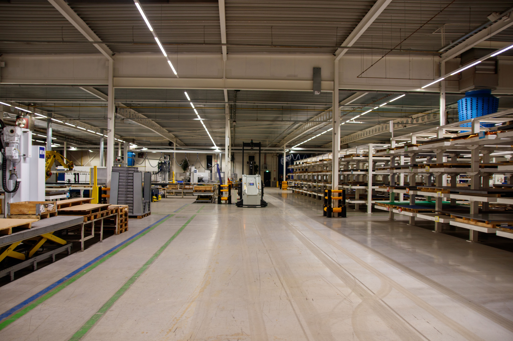

Lean Manufacturing y Eliminación de Desperdicios
¿Qué es Lean Manufacturing?
Lean Manufacturing es una filosofía de trabajo que busca optimizar los sistemas de producción. Se centra en la eliminación sistemática de desperdicios, definidos como cualquier actividad que consume recursos pero no agrega valor real al producto desde la perspectiva del cliente final.
5S y Mejora Continua (Kaizen)
Las 5S son una metodología para organizar el área de trabajo: Seiri (Clasificar), Seiton (Ordenar), Seiso (Limpiar), Seiketsu (Estandarizar) y Shitsuke (Mantener la disciplina). Por otro lado, el Kaizen es el principio de la mejora continua: realizar pequeños cambios positivos a diario, involucrando a todo el personal para hacer el trabajo más fácil y eficiente.
Los desperdicios en la industria plástica
- Esperas: Operarios inactivos esperando que un molde se caliente o que llegue el material.
- Movimientos innecesarios: Trabajadores caminando de un lado a otro por herramientas mal ubicadas.
- Defectos: Productos de plástico que deben ser desechados o reprocesados por fallas.
- Exceso de producción: Fabricar más unidades de las requeridas, lo que genera cuellos de botella en los almacenes.
Ejemplos de mejora
- Reorganizar las estaciones de trabajo mediante 5S para que las herramientas estén al alcance de la mano.
- Reducir el tamaño de los lotes de producción para evitar la acumulación de inventario.
- Instalar tableros visuales para que cualquier trabajador detecte inmediatamente si hay un problema en la máquina.

Desperdicios y Soluciones
| Tipo de Desperdicio | Ejemplo | Posible Solución |
|---|---|---|
| Movimientos | Ir a otra sala por un destornillador. | Crear un panel de herramientas 5S en la máquina. |
| Defectos | Lotes enteros de plástico manchado. | Instalar sensores de calidad Poka-Yoke (a prueba de errores). |
| Esperas | Máquina detenida por falta de orden. | Mejorar la programación y el flujo de comunicación. |